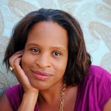
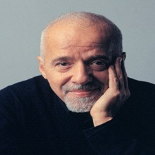

Cultura > Leitura
Conheça os 6 autores dos livros
por Luiz Henrique
Atualizado em 30/Março/2017
1. Steven Erikson
Steven Erikson Nasceu em Outubro 1959, escritor canadense, que foi educado tanto como arqueólogo como antropólogo. Sua obra mais conhecida é a série de fantasia de dez volumes O Livro Malazano dos Caídos (Malazan Book of the Fallen), que até 2006 tinha vendido mais de 250.000 cópias no mundo. O site SF e Review Fantasy Books chamou a série de "a melhor série de fantasia dos últimos tempos".

2. Nicola Yoon
Nicola Yoon é autora do best-seller Tudo e Todas as Coisas, cuja adaptação para o cinema estreia em 2017. Ela nasceu na Jamaica em 1972, cresceu no Brooklyn e mora em Los Angeles com a família. É uma romântica incurável que acredita ser possível se apaixonar num instante e que isso pode durar para sempre. O Sol Também é Uma Estrela é seu segundo livro. Ele foi considerado Melhor Livro do Ano por Publisher’s Weekly e Amazon e foi finalista do National Book Awards 2016.
3. Robert B. Cialdini
Robert B. Cialdini, Ph.D nasceu emm 1945, formou-se e pós-graduou-se em persuasão e influência social na Universidade da Carolina do Norte e na Universidade Columbia. Atualmente, ele é Professor Catedrático de Psicologia na Universidade Estadual do Arizona em Tempe.
4. Lilia Moritz Schwarcz
Nasceu em 1957, em São Paulo. É professora titular no Departamento de Antropologia da USP e Global Scholar na Universidade de Princeton (EUA). Seu livro As barbas do imperador - D. Pedro II, um monarca nos trópicos ganhou o prêmio Jabuti de Livro do Ano, em 1999. Além deste, publicou também: O espetáculo das raças, O sol do Brasil (prêmio Jabuti de melhor biografia, 2009), D. João carioca - história em quadrinhos sobre a chegada da Corte portuguesa ao Brasil, em coautoria com Spacca -, entre outros e Um enigma chamado Brasil, com André Botelho (prêmio Jabuti ciências sociais, 2010). Dirigiu a coleção História do Brasil Nação em seis volumes, (Objetiva/ Fundação Mapfre), sendo três volumes indicados para o Jabuti.

5. Rick Riordan
Rick Riordan nasceu em 1964 nos Estados Unidos, em San Antonio, Texas, e hoje vive em Boston com a esposa e os dois filhos. Autor best-seller do The New York Times, premiado pela YALSA e pela American Library Association, por quinze anos ensinou inglês e história em escolas de São Francisco, e é a essa experiência que ele atribui sua habilidade em escrever para o público jovem. Além das séries Percy Jackson e os olimpianos e Os heróis do Olimpo, inspiradas na mitologia greco-romana, Riordan assina a bem-sucedida série As crônicas dos Kane, que visita deuses e mitos do Egito Antigo e Magnus Chase e os deuses de Asgard, que aborda o universo da mitologia nórdica.
6. Paulo Coelho
Um dos autores mais lidos e respeitados em todo o mundo, Paulo Coelho tem a sua obra publicada em mais de 160 países e traduzida em 73 idiomas. É autor do clássico dos nossos tempos, O Alquimista, considerando o livro brasileiro mais vendido de sempre. Nascido no Rio de Janeiro, em 1947, foi encenador e dramaturgo, jornalista e compositor, antes de se dedicar à literatura. Ocupa a cadeira número 21 da prestigiada Academia Brasileira de Letras, é Embaixador Europeu do Diálogo Intercultural e Mensageiro da Paz das Nações Unidas.
